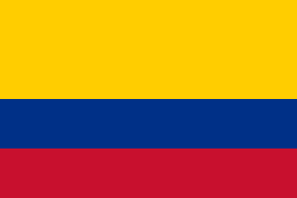

Hello! Welcome to my home page! My name is David Ruiz. I was born in Jackson Heights, New York on February 2000. I am of Colombian background, and I currently attend Borough of Manhattan Community College as a computer science major. I do not have any specific plans of where exactly I want to go with my professional career, but I know that if I stay focused on what I need to do and what matters to me, life will take me where I need to be.
| Language Name | Time Used | Preference Rank |
|---|---|---|
| JavaScript | 2 Years | 1 |
| CSS | 2 Years | 2 |
| HTML | 2 Years | 3 |
| C++ | 1 Year | 4 |
Last updated on September 19 2026 by David Ruiz